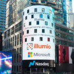

Actualités
Actualités 2024

Ce que la nouvelle administration américaine signifie pour la cybersécurité
Dans un entretien télévisé avec TechStrong, Gary Barlet, directeur technique du secteur public d'Illumio, partage des informations essentielles sur ce que la nouvelle administration pourrait signifier en matière de cybersécurité. Il souligne que les cybermenaces ne se soucient pas de savoir qui est aux commandes et que les efforts fédéraux pour avancer la cybersécurité devraient continuer sous l'administration Biden, qui s'appuiera sur les fondations mises en place sous l'administration Trump avec la création de l'Agence de cybersécurité et de sécurité des infrastructures (CISA).
Barlet considère que la cybersécurité est une responsabilité morale et stratégique, et que le Congrès doit prendre des mesures concrètes pour légiférer dans ce domaine. Il espère qu'une prise de conscience croissante encouragera une action législative forte afin d'éviter des attaques majeures comme un « cyber Pearl Harbor ».
Les infrastructures critiques peuvent atteindre le niveau Zero Trust, même avec des ressources limitées
Barlet explique dans un article de Ville et comté américains que les organisations gouvernementales locales et les infrastructures critiques peuvent adopter des stratégies de sécurité efficaces même avec un budget restreint. Il préconise l'adoption du modèle Zero Trust, qui repose sur l'idée qu'une violation de sécurité peut survenir à tout moment et recommande de ne jamais faire confiance à un utilisateur ou un dispositif sans vérification. Cette approche permet de réduire les risques tout en maximisant l'efficacité des défenses.
Les infrastructures critiques telles que les réseaux électriques et les services de santé peuvent bénéficier de Zero Trust, même avec des ressources limitées. Les pratiques comme l'accès au moindre privilège et la microsegmentation permettent de protéger les systèmes critiques sans dépenser excessivement.
Une nouvelle ère de sécurité basée sur les graphes, accélérée par l'IA
Microsoft a annoncé qu’elle testait une nouvelle approche de la cybersécurité basée sur des graphes, combinée avec l'IA, pour détecter et contenir les menaces de manière plus rapide et efficace. Cette approche, le « graphe de sécurité unifié », relie les points de données pour détecter des modèles et des activités inhabituelles, et permet de réagir plus rapidement face aux attaques avancées. L'IA joue un rôle crucial pour améliorer la défense contre les cyberattaques sophistiquées qui peuvent contourner les systèmes de sécurité traditionnels.
Charlie Bell, vice-président exécutif de la sécurité chez Microsoft, explique que cette méthode permet de visualiser les chemins d'attaque potentiels et d'agir avant que les menaces ne se propagent. Ce modèle, soutenu par l'IA, représente une avancée majeure pour l'avenir de la cybersécurité.
Comment GitHub a aidé Carlsberg à améliorer ses pratiques de développement et sa sécurité
Le brasseur danois Carlsberg a intégré plusieurs solutions de GitHub, dont son assistant au développement Copilot et sa suite d'outils de cybersécurité “GitHub Advanced Security”. À la clé, une meilleure fluidité dans les outils de développement et la suppression de plus de 30 000 vulnérabilités.
Kronenbourg, Grimbergen, 1664… toutes ces brasseries appartiennent au groupe danois Carlsberg, qui occupe la troisième place des plus gros brasseurs au monde avec 6,1% de part de marché en volume. Le groupe, qui fabrique et distribue ses produits dans 150 pays, a progressivement mis en place six solutions pour le développement de logiciels.
Une seule plateforme pour fluidifier le quotidien des développeurs : Le problème rencontré par Carlsberg était une multiplication des outils freinant les équipes de développement. L'intégration de la plateforme DevSecOps de GitHub a permis aux équipes de travailler sur une seule plateforme centralisée, facilitant la gestion des processus de développement.
Copilot a permis aux développeurs de travailler sur d'autres langages : L’assistant Copilot de GitHub a considérablement amélioré la productivité de l'équipe en réduisant la courbe d'apprentissage pour devenir un développeur cloud efficace, en permettant de travailler sur des langages moins familiers.
600 secrets inconnus identifiés dans son code source : Carlsberg a intégré GitHub Advanced Security, permettant de détecter automatiquement des secrets (clés et jetons) enregistrés dans les dépôts privés. L'utilisation de la fonctionnalité "Secret Scanning" a permis d'identifier 600 secrets inconnus dans leur code source. La fonctionnalité “Push Protection” a également empêché l’introduction de nouveaux secrets dans les dépôts.
Grâce à l'outil GitHub Advanced Security, Carlsberg a supprimé plus de 30 000 vulnérabilités, renforçant ainsi la sécurité de ses applications et systèmes.
Actualités 2025
Les avancées en cryptographie post-quantique
Avec l'avènement des ordinateurs quantiques, la cryptographie actuelle devient obsolète. En 2025, des algorithmes de cryptographie post-quantique sont testés dans les secteurs bancaires et gouvernementaux pour protéger les données sensibles contre ces nouvelles menaces. Ces innovations permettent de garantir que les données resteront sécurisées même avec la montée en puissance de la technologie quantique.
Attaques sur les infrastructures énergétiques
Les centrales électriques en Europe ont été ciblées par des cyberattaques sophistiquées en 2025. Ces attaques exploitent des failles dans les systèmes SCADA utilisés pour gérer l'approvisionnement énergétique. Les gouvernements augmentent les investissements en cybersécurité pour renforcer la défense de ces infrastructures critiques et protéger les populations contre les perturbations majeures dans l'approvisionnement en énergie.
Sécurité dans le cloud : Les enjeux actuels
Alors que les entreprises migrent massivement vers des solutions cloud, la sécurité des données devient un défi majeur. En 2025, les approches "Zero Trust" et le chiffrement bout en bout sont devenus des standards pour garantir la sécurité des informations sensibles dans le cloud. Ces pratiques visent à limiter l'accès aux données sensibles uniquement aux utilisateurs autorisés et à prévenir les violations de données.
Cyberdéfense en Europe
En 2025, l'Union européenne investit massivement dans la cybersécurité avec un fonds de 1,5 milliard d'euros pour renforcer la protection des États membres. Des centres de réponse rapide sont mis en place pour coordonner les efforts face aux cybermenaces croissantes, et cette initiative vise également à harmoniser les normes de sécurité entre les pays européens.
La cybersécurité dans les véhicules connectés
Les voitures autonomes et connectées présentent de nouveaux défis en matière de cybersécurité. En 2025, les fabricants collaborent avec des experts pour sécuriser les systèmes embarqués contre les intrusions à distance, garantissant ainsi la sécurité des conducteurs et des données des véhicules contre les cyberattaques potentielles.
Ransomware-as-a-Service : Une nouvelle économie criminelle
Le modèle "Ransomware-as-a-Service" (RaaS) permet désormais aux cybercriminels de louer des outils de ransomwares, même sans compétences techniques. En 2025, cette tendance a explosé, avec des cybercriminels novices ayant accès à des outils sophistiqués pour lancer des attaques. Cette évolution a élargi le champ des attaques, augmentant le nombre de victimes et rendant la lutte contre cette menace plus difficile.
Les entreprises doivent maintenant être plus vigilantes que jamais et adopter des stratégies de cybersécurité adaptées, notamment par l'intégration d'outils de détection automatisée et de prévention des ransomwares pour contrer cette nouvelle forme de cybercriminalité.
Les menaces sur la 5G
L'adoption rapide de la 5G expose les réseaux à des cyberattaques plus sophistiquées. En 2025, les opérateurs télécoms investissent dans des technologies avancées pour protéger les infrastructures et les appareils connectés, tout en éduquant les utilisateurs aux bonnes pratiques pour réduire les risques liés à la sécurité sur ces réseaux de nouvelle génération.
Formation en cybersécurité
La pénurie de professionnels en cybersécurité pousse les universités et les entreprises à créer des programmes spécialisés. En 2025, ces formations accélérées visent à préparer une nouvelle génération d'experts capables de répondre aux cybermenaces croissantes. Ces initiatives se multiplient pour combler les lacunes en matière de compétences dans ce secteur vital.
Phishing ciblé : Une menace persistante
Les attaques par phishing deviennent de plus en plus ciblées, utilisant des informations personnelles pour convaincre les victimes. En 2025, les entreprises renforcent la sensibilisation de leurs employés pour limiter les risques et utilisent des solutions d'analyse des emails suspectes pour identifier les tentatives d'escroquerie avant qu'elles ne soient exécutées.